下载何须迅雷
通常浏览器下载就可以满足日常需求。迅雷也一直是一个很好的加速下载工具，但是它有些笨重了。本次介绍下载利器 curl 这个免费开源工具。本文灵感来源于此谷歌博客：语虚。
curl
使用 终端命令：比如 cd 到桌面目录，输入 curl -O https://www.jianguoyun.com/p/DeQRYFYQ--fwBRju_h4 回车即可在桌面得到名为 DeQRYFYQ--fwBRju_h4 的文件。大写字母 o 意为 remote-name。如果想要自定义文件名可以输入 curl -o 自定义.名字 https://www.jianguoyun.com/p/DeQRYFYQ--fwBRju_h4。
更多命令及讲解可 看这里。curl 更多功能，比如还支持断点下载、使用代理下载、限制文件大小或网速等等，具体可看 这里。
curl 虽然可满足日常的下载需求，但是比如 PT 资源也需要其他工具。
其他工具
PT 下载工具
两者均免费开源且无广告的 BT 下载工具。
- Transmission Macintosh & Linux
- qBittorrent Macintosh & Windows
评价
- flox 号称 Macintosh 下最好的下载器，但是我并没有发现特别的亮点，通常用浏览器下载就行了。
- 迅雷 搞个迅雷会员来下载某些资源确实挺给力，但日常需求完全不需要用它。不简洁的软件就是不喜欢。Windows 上有迷你版，Macintosh 却没有。
- 电驴 似乎是在 2016 年重出江湖。确实是神器，在备用的 Windows 中使用，资源大多比较污。
命令行最大的劣势就是不直观，但熟悉了也就“直观“了，况且如此简洁且强大，值得一学。但我几乎只使用浏览器下载，如果有要下载的特殊资源，会在虚拟机中开迅雷或 QQ 旋风下载。
Zotero 如何添加文章检索引擎
本文被少数派精选：点此查看
Zotero 是优秀的免费开源个人知识管理工具，一般用于管理学术文献，其以跨 macOS、Windows、Linux 三大平台、强大易用的功能闻名于学术圈。如果你是新生或者还未使用文献管理工具，如果你需要知识管理工具，Zotero 可能是你最好的选择之一。关于 Zotero 的使用教程数不胜数，但本文所讲的问题「如何添加文章（文献）检索引擎」任何其他教程都没有给出解决方案，我也是探索良久才得出解决办法。
添加列表中没有的检索引擎，请在浏览器中访问检索引擎网页，并从 Zotero 的“定位”菜单中，选择“添加”。但崩溃的是按照此提示的操作，无法添加检索引擎。
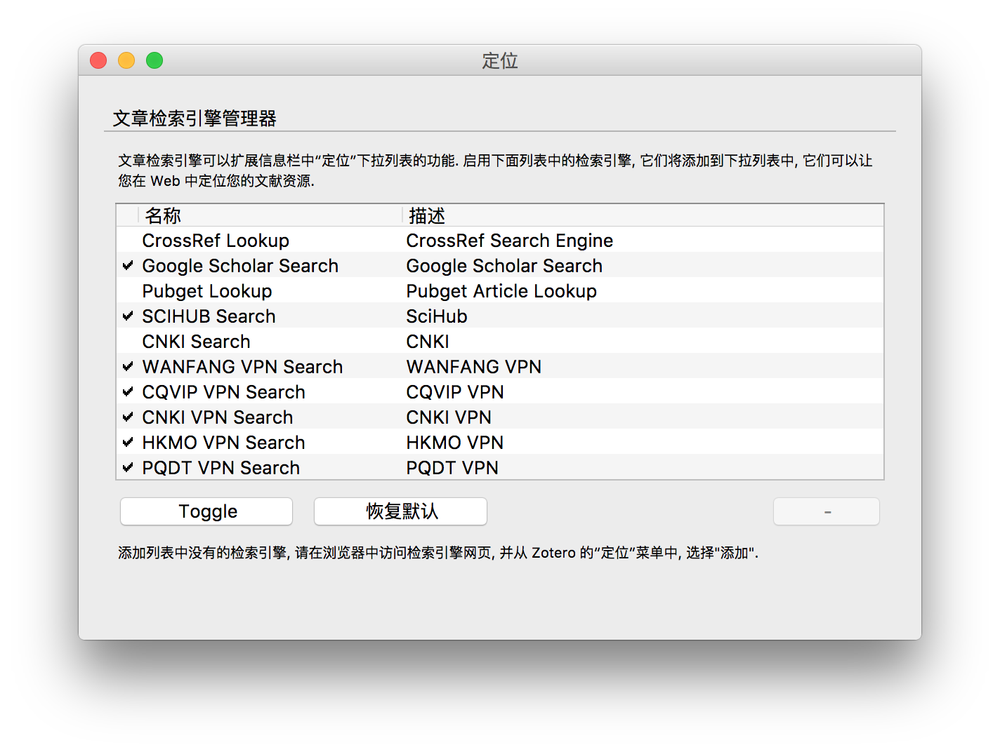
系统安装记录及问题解决
系统的安装常常会出现一些问题。此文记录了用 U 盘安装系统的经验，但并非详细的教程，操作步骤随意搜索即可得到。
安装 Ubuntu
2016 年 11 月份在旧联想本安装其最新版本。
报错信息
- 对不起。发生了一个错误，不能在指定的位置安装启动引导程序。
- 无法将 grub-pc 软件包安装到 /target/ 中。如果没有 GRUB 启动引导器，所安装的系统将无法启动。
搜索到的解决方案：
1. 重新使用 Rufus 烧录镜像
2. 在电脑 BIOS 关闭 UEFI
3. 安装过程中保持联网
搜索到的解决方案，基本都只用了其中一步就可以解决问题。我第一步完成后，依旧报错，把二三步设置好就一路畅通。并不知道二和三步谁是必不可少，还是说都是必须设置的。
安装 Windows XP
由于 Ubuntu 过于小众且难以塑造良好的生产环境，故在2016年12月份在旧联想本安装原版 Windows XP with SP3，工具使用 WinSetupFromUSB，似乎也只能借助这个软件才能使用 U 盘安装 XP，具体过程请 参照这里。
实际上，我建议使用 Ghost XP 安装，无人值守并且集成驱动确实可以省却很多功夫。之前我只安装原版系统，但 XP 无疑是较为适合使用 Ghost XP 来安装。虽然我通过 WinSetupFromUSB 成功安装了原版 XP 但遇到了一些棘手的问题，比如鼠标驱动无法安装。后来使用深度 Ghost XP 的本地硬盘安装方式重装了 XP，体验让我满意。
那么 Ghost 系统是何含义
即先把系统安装在制作者电脑上，制作者进行修改或优化，然后把安装系统的硬盘分区用 Norton Ghost 进行完全备份，此备份就称之为 Ghost 系统。但也要注意，推广者或许会安装自家全家桶软件，恶意者甚至会留下后门。故，虽然 Ghost 系统的安装实际上就是还原，速度会很快，也免去了诸多配置，但也要小心使用网上流传的 Ghost 系统。另外，多数 Ghost 系统自身集成了多数硬件的驱动，故增加了不兼容故障的可能性。
Ghost 是 General Hardware Oriented System Transfer（通用硬体导向系统转移）的简写，作为单词的含义为幽灵。其英文全称为 Norton Ghost（Symantec Ghost），中文全称为诺顿（赛门铁克）克隆精灵。Ghost 是硬盘克隆程序，可快速而完整地备份和还原整个硬盘或分区。赛门铁克于 2014 年 6 月 30 日后不再提供 Ghost 的支持服务，2010 年发布的 Ghost 15 是最终的版本。其建议转移使用的新软件 Symantec System Recovery（赛门铁克系统恢复）与 Ghost 使用的备份引擎相同，可视为 Ghost 16 版本。
原版系统安装过程中的问题
- 没有检测到大容量硬盘
也即没有识别出硬盘。不要急，此时重启，在选择
First part of Windows XP Professional setup界面时，应该有四个选项，其中第三个是First part of Windows XP Professional setup。选择第一个，回车键执行以后会识别出硬盘，如果第一个不起作用可以选择第二个选项。之后再选择First part of Windows XP Professional setup按照原教程进行安装。 - 安装程序无法复制文件 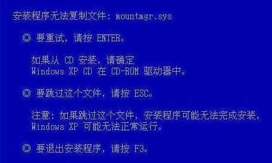
全部按 ESC 跳过就可以成功安装 XP 系统。但是后续可能出现兼容问题，比如我遇到鼠标无法识别的问题，而且无论是借助驱动人生还是手动方式都无法成功安装相应驱动。
失败的安装经历
- 选用成功安装 Ubuntu 的工具：Rufus 选择 U 盘启动但没有进入安装界面。Rufus 设置信息：MBR 分区方案 用于 BIOS 或 UEFI-CSM 的计算机。当文件系统设置为 FAT 时电脑无法识别，也即没有任何反应就进入了原系统；设置为 NTFS 时，刻录会出现 %s 未知错误。
- 选用本科时重装 Windows 7 的必用工具：UltraISO
报错信息
INF file txtsetup.sif is corrupt or missing, Status 18，原因是 U 盘被误当 C 盘，也只有在安装 XP 时会遇到这个问题。
安装 Windows 7
Windows 7 及更高版本系统的安装随意选择烧录工具即可用 U 盘正常安装。
安装 Windows 10
2017 年 8 月 5 日安装 Windows 10 系统，电脑型号为 Dell M301Z，这是一款变态的电脑：
- 易升下载了三遍还要继续重新下载，这是微软的锅，弃用；
- 采用微软官方 Windows 10 下载安装器（意外发现除了易升还有它），但安装过程中却提示出错信息
Windows Could Not Configure one or components，停留在此界面按照油管上的解决方案也许可以解决，可我已经关闭电脑了…… - 为此我还是采用 U 盘安装的方式，但使用 Rufus、软碟通烧制的启动器都出现问题：Rufus 是从 U 盘无法启动；软碟通则是直接卡在 Windows 10 Logo 界面，无法弹出安装界面；
- 使用 WinSetupFromUSB 烧录镜像，一切正常。
Rufus、软碟通失败原因推测：也许因为 U 盘是 NIFT 格式，而 WinSetupFromUSB 将 U 盘格式化为 FAT 格式。
结论：不论是安装 Windows 10 还是其他 Windows 系统，WinSetupFromUSB 应该是最佳的选择，这是我遇到的出现 BUG 机率最低的应用。而 Linux 系统最好选择 Rufus，安装 macOS 只需按照官方教程即可。
安装 macOS
安装官方教程轻松安装，全程只需依照教程输入数句命令。
相关知识
分区方案
MBR 分区方案
MBR（Master Boot Record）即主引导记录，也称为主引导扇区。其硬盘分区表仅有 64 个字节，而每个分区信息需要 16 个字节，所以采用 MBR 分区的硬盘最多只能识别 4 个主要分区。也因为 MBR 分区方案使用 4 个字节（32 个比特）存储分区的总扇区数，最大能表示 232 个扇区，硬盘驱动器（HDD）每扇区为 512 字节，故每个分区最大不能超过 2 TB。
GPT 分区方案
GPT（Globally Unique Identifier Partition Table Format）即 GUID 分区表、全局唯一标识分区表。其为源于 EFI （Extensible Firmware Interface，可扩展固件接口 ） 标准的一种较新的磁盘分区表。这种分区方式大大突破了 MBR 分区的限制，而且也做了其他优化。唯一的缺点就是旧设备也许不支持使用 GPT 分区的磁盘。
引导模式
UEFI BIOS 支持两种引导模式：Legacy BIOS 引导模式和 UEFI 引导模式。某些设备和操作系统尚不支持基于 UEFI 的 BIOS，因此只能从 Legacy BIOS 引导模式引导。较新的设备提供了 CSM（Compatibility support Module）选项，其表示兼容模块，开启 CSM 使设备支持 UEFI 启动和非 UEFI 启动。
再谈 Homebrew Cask 在 macOS 上的应用安装
本文被少数派精选：点此查看
以新手的视角说说 Homebrew Cask，通过此文，希望同为新手的我们可以更加理解 Homebrew Cask，也更频繁地使用它安装不上架 Mac App Store 的应用，让生活少一些繁琐。
Homebrew 是一款开源的软件包管理系统，用以简化 macOS 上的软件安装过程，可以类比于 Windows 上软件管家的一键安装。Homebrew 在 2009 年由马克斯·霍威尔（Max Howell）写成，它在 GitHub 上拥有大量贡献者，目前仍处于活跃状态。
Homebrew Cask 是 Homebrew 的扩展，借助它可以方便地在 macOS 上安装图形界面程序，即我们常用的各类应用。Homebrew 中文含义为自制、自酿酒，Cask 中文含义为桶、木桶，桶装酒是一种成品，也就是说每一个 homebrew cask 都可以直接使用的，比如 Atom 的 Cask 名称为 atom，那么就可以使用如下命令安装：
brew cask install atom
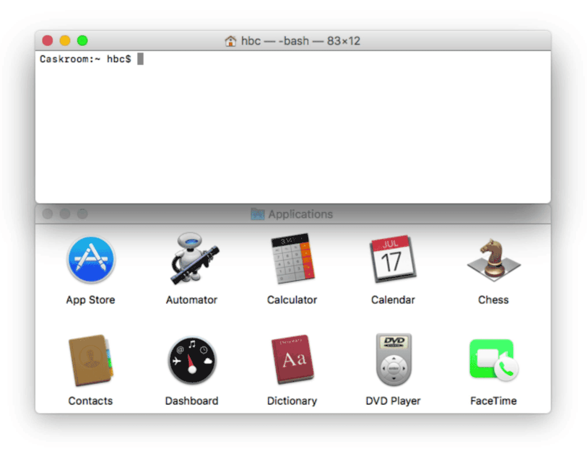
甚至也可以提交新的 Cask，比如假设有桌面客户端少数派，则用 brew cask create sspai 创建新的名称为 sspai 的 Cask，当然还要提供官网下载链接、官方主页、应用版本等信息，可以参照 官方教程，此处就不再细说。
PDF 应用评测：Adobe Acrobat VS PDF Expert VS PDFelement
本文被少数派精选：点此查看
我一直有考虑如何选择一个无可挑剔的 PDF 应用，这也许是一个强迫症的自我修养，因为总想以一个优美、简洁、全能的应用完成作业。如果你觉得 CAJ Viewer 等即能满足需求，而且没有感到任何不妥，那么本文可能并不适合您。
经过一番思考，我选择了 Adobe Acrobat、PDF Expert、PDFelement 三者进行横向分析。Adobe Acrobat 是鼻祖，谈到 PDF 就不能绕过它；PDF Expert 是 macOS 上最受欢迎的 PDF 应用，其为 Mac App Store 编辑精选、2015 年最佳应用、收费应用冠军；PDFelement 是我 之前推荐 的全能型应用，其开发者最近向我约了一份稿《Adobe Acrobat VS PDFelement》并愿意支付稿费，我愉快地接受了约稿，但拒绝了稿费，虽然 PDFelement 是我欣赏的应用，也解决了我遇到的一些问题，可我写文章一向是基于个人喜好的公正，暂时不需要稿费来改善生活。当然我很乐意再次推荐 PDFelement，因为新版 PDFelement 是参与活动所赠……
本文以两份中文 PDF 文件为例，平台为 macOS，其中 Adobe Acrobat、PDFelement 也提供 Windows 版本。福昕阅读器 macOS 版本的功能较为基础，在 Windows 下虽然很强大，比如有一些插件，但因其个人用户免费的策略也难免会有欠缺美感的广告，这也是福昕没有入选本文的原因，其他应用如预览、Skim 等要么功能太基础，要么美感不够，如果还有别的令人惊艳的 PDF 应用还望告知。本文选取的应用均是个人认为的代表之作，目的是彻底解决 PDF 的相关问题，也让自己少一个密切关注的问题。
价格
免费的优秀应用实在太少，绝大多数 PDF 免费应用更是让我难以忍受，较好的免费应用比如福昕也有致命缺点，比如 macOS 版无法编辑 PDF。原来我倾向于使用免费应用，现在倾向于使用相对便宜的收费应用，如 Parallel Desktop 这类难以替代的应用也只能忍痛掏钱。Adobe Acrobat、PDF Expert、PDFelement 在低需求下可以相互替代，但这三者的原本定价都不便宜，还好有中国特价、周年庆、教育优惠、代理商城优惠，也可关注赠码活动。比如 PDF Expert 官方十周年五折优惠与教育优惠叠加后约 101 元，这只是特殊时期的价格。
Adobe Acrobat
官网价格：标准版约 ¥ 2018 & 专业版约 ¥ 3030
官网教育优惠：专业版约 ¥ 1077
PDF Expert
Mac App Store 价格：¥ 396
中国官网特价：¥ 139.99
数码荔枝商城：¥ 129
PDFelement
Mac App Store 价格：标准版 ¥ 198 & 专业版 ¥ 648
中国官方特价：标准版 ¥ 199 & 专业版 ¥ 299
数码荔枝商城：标准版 ¥ 129 & 专业版 ¥ 199
翻页软件商城：标准版 ¥ 129 & 专业版 ¥ 199
PDF Expert 也有教育优惠，但还没有中国官网便宜，在中网并没有教育优惠入口。PDFelement 也可以申请批量教育优惠许可证，我所使用的大多数应用，其开发者都提供教育优惠（独立开发者一般没有），通常优惠五折，甚至免费。而且，虽然我所购应用均为自费，但再给我一次机会的话，我会考虑找导师报销…… 相当不满意目前的报销制度，比如不能开发票的小东西，积少成多也是一笔巨款。如果我做导师，会想办法解决学生的一切学术所需之费用，包括正版软件、无法开具发票的物品与部分话费等。
界面
在界面上，三者的左面板有些区别。对 Adobe Acrobat 与 PDFelement 来说，书签是 PDF 的目录大纲；在 PDF Expert 中书签是自定义的书签，点击页面右上角的标志即可添加书签，而大纲才是目录大纲，这对阅读书籍类 PDF 相当友好。
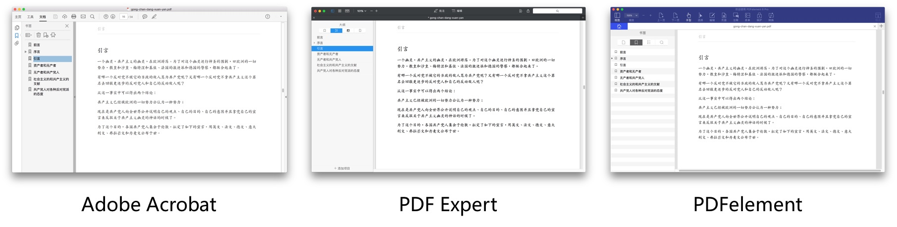
功能
Adobe Acrobat、PDF Expert、PDFelement 三者安装完毕后的大小分别约为 990 MB、37 MB、31 MB（可选 OCR 插件约为 550 MB），Acrobat 虽然庞大也确实有其强大之处。 Adobe Acrobat 可以说是超级型 PDF 应用，PDF Expert 是通用型 PDF 应用，PDFelement 是全能型 PDF 应用。
我认为的核心功能：① 阅读与批注；② 搜索；③ 可编辑；④ OCR；⑤ 云服务。在「独到之处」部分也会阐述令人耳目一新的功能，不过倒是可以先介绍 PDFelement 提供的 PDF 模版库，此处有大量免费与收费模版并划为数十分类，其中最受欢迎的简历模版还确实挺好看。
阅读与批注
在此方面，Acrobat 的表现最差，PDF Expert 的表现最令我满意，PDFelement 的表现中规中矩：
① 只有 Acrobat 不支持多标签页；
② 只有 Acrobat 不能方便地使用不同颜色批注，即使将「注释」工具打开也较为不便；
③ 放大倍数较大时，PDFelement 滑动页面的流畅度下降。
批注功能没有多少可说的内容，三者的差别较小，阅读体验方面是我关注的重点。使用快捷键快速调整视图，这是阅读方面不可或缺的重要功能，而三者的视图快捷键也略有不同：
| 缩放 | Acrobat | PDF Expert | PDFelement |
|---|---|---|---|
| 放大 | ⌘+ | ⌘+ | ⌘+ |
| 缩小 | ⌘- | ⌘- | ⌘- |
| 实际大小 | ⌘1 | 无 | ⌘1 |
| 适合宽度 | ⌘2 | ⌘9 | ⌘2 |
| 适合高度 | ⌘3 | 无 | ⌘3 |
| 适合页面 | ⌘0 | ⌘8 | ⌘4 |
当然也有些独特功能更好地服务了阅读的目的，这在细节上改善了阅读体验，也带给我惊喜，只不过 PDFelement 在此方面仅有基础功能。
Acrobat：
① 重排（⌘4），根据应用界面大小重新排列 PDF 内容，类似于多看阅读的重排效果；
② 比较文档：可显示 PDF 两个版本之间的差异，可自定义选项（如页数、内容类型）来显示比较结果。
PDF Expert：
① 拆分视图（水平 ⌘5；垂直 ⌘6）：在同一页面阅览两份 PDF 文档，以左右或上下（水平或垂直）的布局；
② 缩放到 100%（⌘0）：个人认为这是一个贴心的小功能；
③ 主题：有日间（⌥⌘W）、纸质（⌥⌘S）、夜间（⌥⌘N）三种模式。
搜索
搜索功能也是服务于阅读的，但考虑到这是一项关键功能，故而单独说道说道。
Adobe Acrobat、PDF Expert、PDFelement 三者中仅 PDFelement 不支持「多文档」搜索，PDF Expert 支持搜索所有打开的 PDF 文件，而 Acrobat 甚至支持搜索指定目录下的所有 PDF 文件。但在搜索时，Acrobat 滑动页面的操作变慢；PDFelement 搜索完毕才能进行操作，这是一个亟待解决的问题；而 PDF Expert 可如常使用。
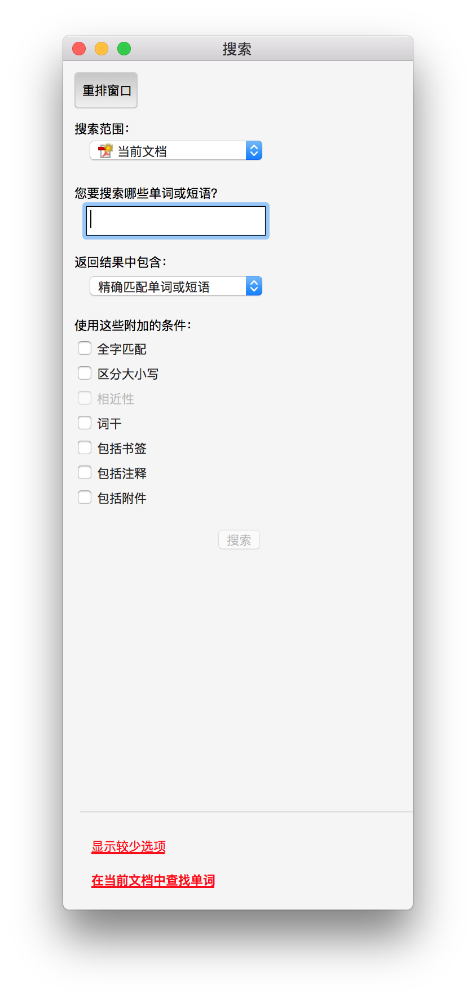
编辑
这部分没有太多可说的，三者的编辑体验类似，但 Adobe Acrobat 与 PDF Expert 都遇到了问题。Acrobat 提示当前字体不可用，转为系统字体；PDF Expert 编辑后字体发生变化。
OCR
Adobe Acrobat 支持 42 种语言，PDF Expert 不支持 OCR，PDFelement 支持 25 种语言。与其搜索功能一样，Acrobat 也可以识别多文档，PDFelement 也可。Acrobat 有一处令我满意的功能：如果文档是扫描件，试图编辑某页内容时，Acrobat 会提示是否将本页转为可编辑的文本。PDFelement 的做法是当打开扫描件时，它会提示是否进行 OCR 操作，我认为 Acrobat 的逻辑更人性化。
在识别时，Acrobat 只能选择一种语言，PDFelement 在识别文件时可以选择多语言，但若一份 PDF 中文里夹杂着少量英文的话，同时选中文、英文与只选中文也没有区别。借助 PDFelement 转换功能将 OCR 前与后的译言页面转为图像，合并如图进行比较：Acrobat 的识别效果实在是惊人，不仅识别完全准确，与原文档相比也几乎没有任何区别；PDFelement 在识别少见字体的文字方面还是力不足。
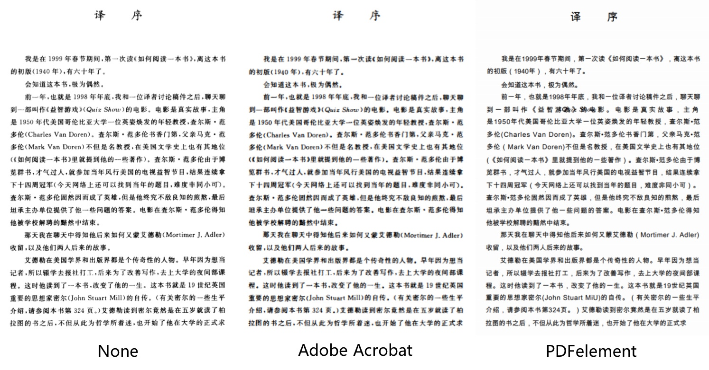
云服务
我认为桌面端并不太需要云服务，电脑上的文件管理方式削减了对云服务的需求。但不可否认的是，在没有安装云盘客户端的情况下，应用直接支持云服务还是比较便利的。Acrobat 支持 Adobe Document Cloud、Adobe Creative Cloud、Box、Dropbox、OneDrive、SharePoint 站点；PDFelement 支持 Dropbox；PDF Expert 桌面版不支持任何云服务。不过移动端的云服务支持才是最重要的部分，这方面 PDF Expert 是表现最好的，它完美地集成了 iCloud 云服务，也可以将其他云盘中的文件夹设为「同步文件夹」以保持内容的一致。
应用打分
| 项目 | 阅读与批注 | 搜索 | 编辑 | OCR | 云服务 |
|---|---|---|---|---|---|
| Acrobat | ★★★☆☆ | ★★★★★ | ★★★☆☆ | ★★★★★ | ★★★☆☆ |
| PDF Expert | ★★★★★ | ★★★★☆ | ★★★☆☆ | ☆☆☆☆☆ | ★★★★★ |
| PDFelement | ★★★★☆ | ★★★☆☆ | ★★★★★ | ★★★☆☆ | ★★★☆☆ |
独到之处
Adobe Acrobat 在批处理方面表现优异，PDF Expert 在阅读体验方面表现优异，PDFelement 在格式转换与部分批处理方面的表现优异。
Adobe Acrobat
Acrobat 的功能实在是太多，而且很细致，无愧于一款超级型 PDF 应用。如果遇到其他应用无法解决的问题，那么 Adobe Acrobat 应该可以解决，只是也许会需要高级技巧。如借助「动作向导」工具可以批量完成各类任务，甚至可以在更多动作下载一些 Actions，如 Delete all Comments、Convert PDF to PowerPoint、Convert PDF File to PS File、Optimize PDF for SEO、Find, Highlight, and Extract Words 等。如果有更复杂的需求，可以借助「JavaScript」工具完成。
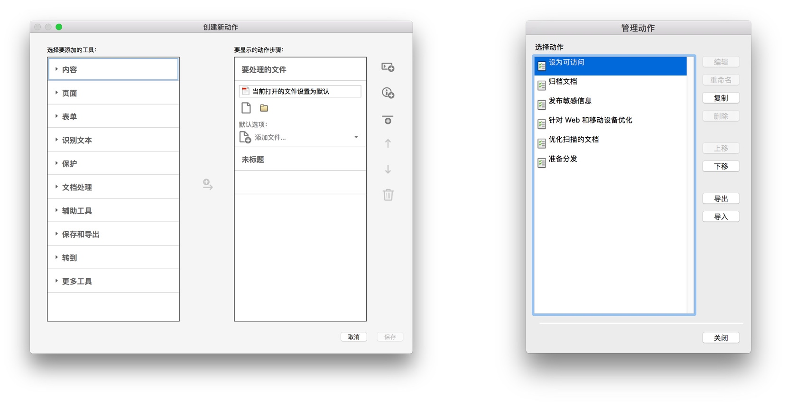
PDF Expert
PDF Expert 的功能实在是太少，但是它在阅读与批注方面的体验无人能及。可以这样说，它就是最好的 PDF 阅读器的样子。在设备协同方面做到了业界第一：Readdle Transfer 可以将 iOS 与 macOS 设备无缝连接；iOS 端云服务支持方面的工作也独树一帜，给了我完美的体验。
PDFelement
格式转换，可将 PDF 或其选定页面转为 Word、Excel、PowerPoint、图像、ePub、纯文本、Pages、Html、RTF 文件，如转换为图像就可以方便地在文章中使用。Adobe Acrobat 虽然也可完成格式转换，但过程不易，而且部分格式的转换可能需要自造轮子。
批处理功能，如批量格式转换、批量去除水印、批量数据提取等，其中「批量数据提取」功能若使用 Adobe Acrobat 就比较麻烦，PDFelemnt 的优点就在于优化了这个过程。比如，当遇到大量报名表、发票等文件，如果非 PDF 格式则使用「批量格式转换」功能将其转为 PDF 文件，那么所有 PDF 文档的结构是相同的，数据提取时选定部分区域（所有文档的区域都是相同位置）即可将所有数据提取到 Excel 表单中。在这里可以查看使用方式与效果。
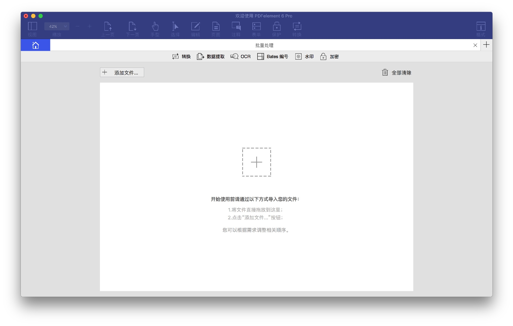
总结
Adobe Acrobat 在功能上无人能及，但阅读体验较差，价格太贵；PDF Expert 在阅读体验上独领风骚，也是最懂 Apple 风格的应用，只是缺一些专业的功能；PDFelement 则是各方面中规中矩，在批处理方面稍突出，但它没有鲜明的长短处，如果有一坐标轴，Acrobat 在最左，PDF Expert 在最右，那么 PDFelement 位于中间再稍偏右的位置。
如果只是想选择一个 PDF 阅读器的话，那么「编辑目录」的功能不可或缺，这点就将许多应用拒之门外。若要免费，似乎只能选择福昕阅读器。若要付费：
| 项目 | 阅读体验 | 功能 | 价格 |
|---|---|---|---|
| Adobe Acrobat | ★★★☆☆ | ★★★★★ | ★★☆☆☆ |
| PDF Expert | ★★★★★ | ★★★☆☆ | ★★★★☆ |
| PDFelement | ★★★★☆ | ★★★★☆ | ★★★★☆ |
① 若更追求完美的阅读体验：只能选择 PDF Expert；
② 若更在意一些专业功能，也要求较好的阅读体验：只能选择 PDFelement；
③ 若极其在意功能的完备性：只能选择 Adobe Acrobat。
天下之大，何时才会出现一款全五星的 PDF 应用？
本文应用版本：
Adobe Acrobat Pro DC 2015.006.30306 for macOS
PDF Expert 2.2.1 for macOS
PDFelement 6 Pro 6.2.0.2988 for macOS
如何优雅地在 macOS 上彻底移除应用
本文被少数派精选并推荐至首页：点此查看
这篇文章是为这样的人所准备：如果你跟我一样有点轻度洁癖，难以忍受电脑应用残余的各种文件，总寻思着如何以优雅的方式彻底移除各类应用。这是我在少数派的第二篇文章，而今天的主角是 AppCleaner，在 以往的文章 中 iTumbledSea 也简单提到过。
本文的目的绝不是测评，也不是只为了介绍如何彻底移除应用（动词移除更符合本文提到的操作方式），而是推荐一种优雅的方式来做这件事。
AppCleaner is a small application which allows you to thoroughly uninstall unwanted apps.
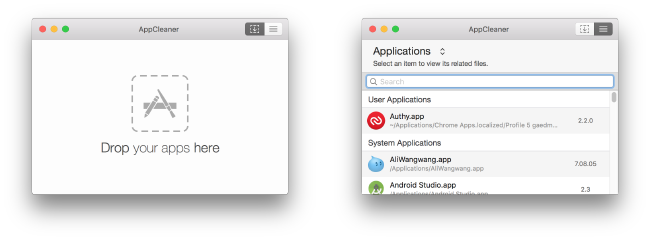
优雅就在于「Drop your apps here」功能，我们只需要做的就是在 Launchpad 中 将要移除的应用拖拽到 AppCleaner 图标上，然后点击 Remove 即可。同时我建议将 AppCleaner 保留在 Dock 中，而且最好放置在 Finder 旁边，当需要彻底移除应用时只要拖拽到图标上即可，多么优雅的操作……
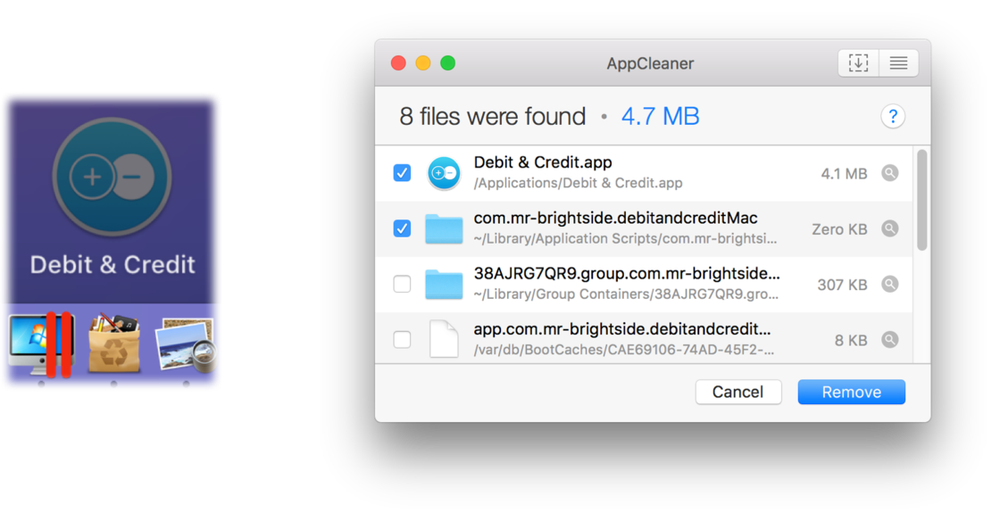
但有些文件需要勾选确认才可删除，因为 AppCleaner 可能关联了不相干的文件。我从没遇到过这种情况，一般而言，文件名字包含应用名字即为相干。如果错误删除了某些文件，只需要 command + z 撤销即可。
AppCleaner 还有如下图的其他细节功能，但 SmartDelete 功能并不特别智能，似乎只能识别在 Finder 应用程序文件中将应用移到废纸篓的操作。
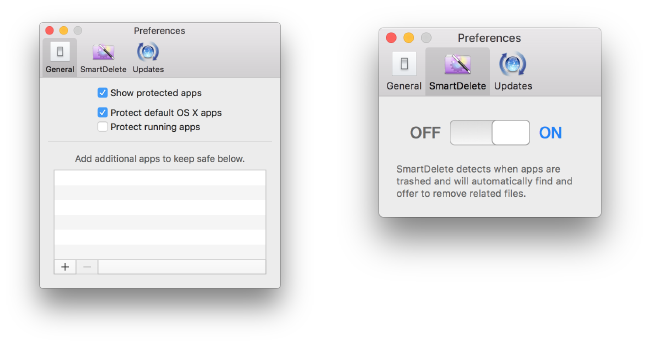
文章到这里其实已经结束了…… 好吧，你告诉我还有点不放心，觉着还有残留，那么可以使用 EasyFind 搜索相应应用并删除相干文件…… 系统自带的搜索功能并不好用。
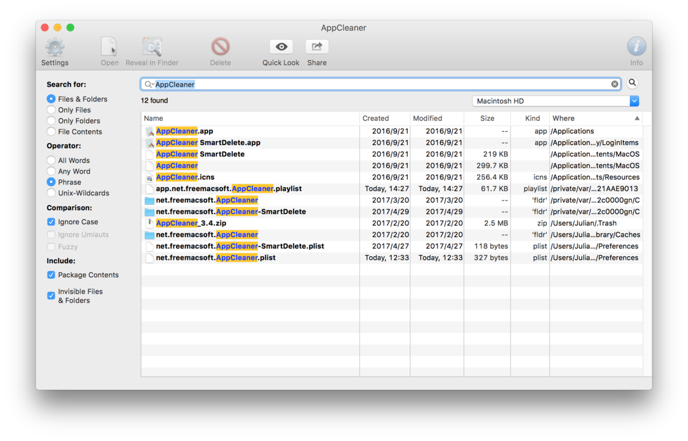
什么？怎么彻底删除 EasyFind 的残留文件？
……
本文应用版本：
AppCleaner 3.4.0 for macOS
关于独立博客的想法
在 GitHub Issues 写博客也面临数个问题：
1. 图片的插入，采用第三方 Issues 客户端时图片并不会上传至 GitHub 服务器，而是三方客户端的服务器，这显然增加了图片丢失风险；
2. 借助 Mirror 呈现内容在博客 blog.tangxiaozhu.com 地址，但搜索引擎只能检索到 Issues，这并不是我想要的；
3. 数据的备份也是个问题，虽然利用 IFTTT 进行备份，但格式错乱且只能备份每一篇 Issues 第一次发布时的内容。
因此，我决定重启 GitHub Pages，并将博客同步到多个平台，原来不愿意这样做是手工太累，但现在可以一键同步的工具越来越多，也越加好用。
此外，我决定不再随意修改已发布文章，这也是最后一次更新本文。今后对待每一篇博客都要严肃认真，要做到我之出品，必为精品，一旦发布除非有错别字、格式错误等问题，绝不修改。内容过时问题是我之前担忧所在，现在我也有了新的想法：写文章时标注好内容适用范围，即便未来过时了，也不失为一种历史参考资料，代表了过去的回忆。
Copyright © 2018 唐小筑 CC BY-NC-SA 4.0